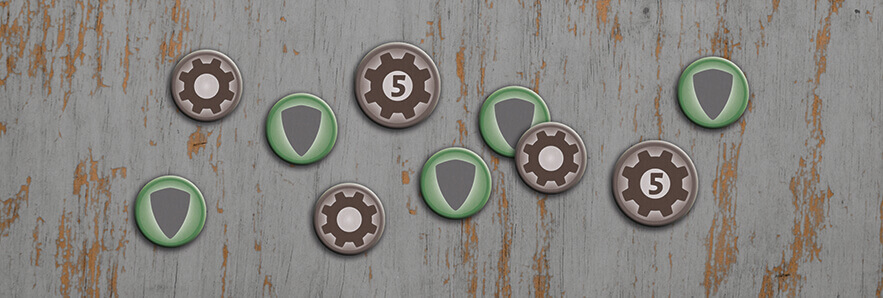
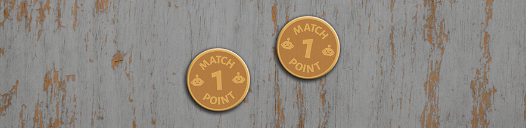
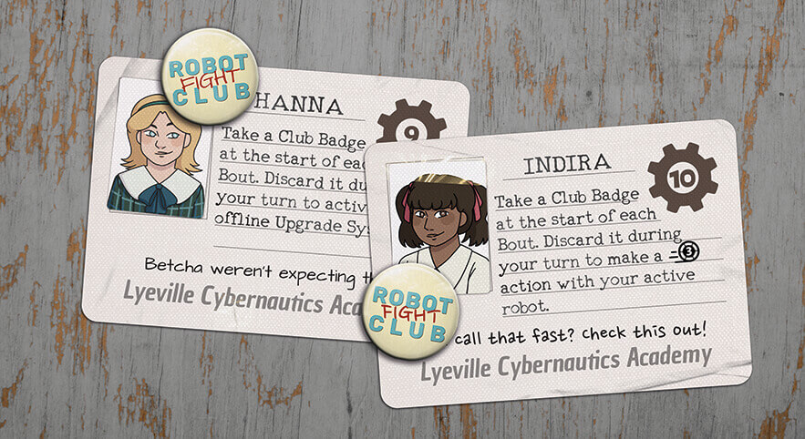
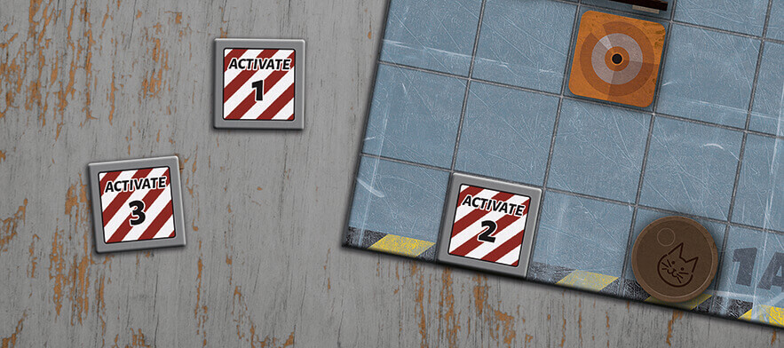

Robot Fight Club is a fast-paced game of kids fighting with robots in an abandoned futuristic academy. The game uses a range of different tokens to manage everything from scrap to match points.
To keep track of how much armor the robots have on each side there are armor tokens. They consist of a shield (a universal icon for protection) on a green background (because it’s positive to have armor 😉) as opposed to the red background of the printed broken armor on the robot boards.
There are also scrap tokens, to keep track of the amount of scrap each player has on hand. In order to not waste space, and so you don’t have to search for the tokens, these are on the back of the armor tokens, which there are a lot of. There are also bigger scrap tokens worth 5 scrap, so you don’t have to have a whole bunch of scrap tokens. The scrap tokens have the same scrap icon that is used on cards.
The match point tokens are used to track victories between bouts. When one player has won two bouts, they win the game. They were designed to look like coins. The small robots were added to reconnect to the robot theme.
The club badges are used by some of the Cybernauts to perform an especially strong action. They are designed as if they were actual badges in the old robot club, but that the kids have written “fight” on. Therefore two different handwriting fonts were used for that word.
The activation tokens are placed on the arena boards and let you activate Upgrade Systems when you enter their spaces. They’re designed to look like pressure plates that could actually be part of the arena, but clean enough to stand out a bit from it as well.
